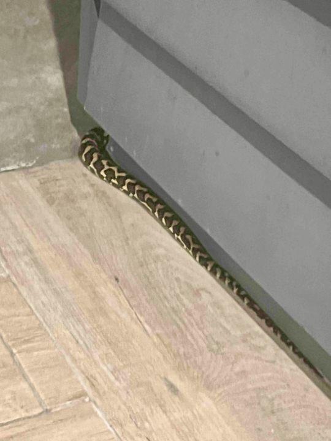

Blog
All posts
Reflections from Marina on past lives, the Higher Self, fear, self-love and the journey back to yourself.

The Day I Realised I Was No Longer Afraid of Snakes
Are There Really “Toxic” People?
What Would You Say to Your Younger Self?
The Story You Cannot See
I Was Looking for the Way Forward… Then I Saw the Phoenix
Embracing the Journey: Building Your Bridge to Healing
The Rooms We Never Enter Within Ourselves
The Loudest Silence of All
"Not all treasure is silver and gold, mate."
Embracing Your Inner Master: The Journey of Self-Discovery and Healing
What Are Our Triggers Trying to Tell Us?
Meeting Your Parallel Reality Self: Exploring the Many Versions of You
I Am Who I Am
Is That Really Your Inner Voice?
Hidden Worlds, Parallel Universes, Alternate Timelines: Exploring Consciousness Through Hypnotherapy
The Future You Already Knows
Healing Generational Trauma: A Journey Towards Self-Discovery
Why Social Situations Feel Overwhelming
The Day You Begin to Love Yourself
Why Do We Criticize So Much And How Can We Start Helping Instead?
When always trying to be the Bigger Person becomes too heavy
Healing the Fear of Disappointing Others
Healing the Mother Wound
Returning to Yourself: A Spiritual View on Alcohol and Hypnotherapy
Why We Struggle to Let Go of Our Traumatic Past
Is Quantum Healing Hypnosis Technique (QHHT) Safe?
Another Cause of Stress No One Talks About: People around us
I Always Had an Attraction for Wolves
From Fear to Flow
When Fear Becomes Guidance: My Journey with the Snake Spirit
Journey Within: Discover Past Lives with QHHT Hypnotherapy
Past Lives: A Journey Through Memory Lane
Articles open on the current My Esoteric Healer blog. They share personal and spiritual perspectives and are not medical advice. Quantum Healing Hypnosis is a complementary practice. It is not a substitute for medical or psychological care, diagnosis or treatment. Please keep seeing your doctor or health professional for any health concern.
Book online

Begin your journey
Sessions take place in Marina's rooms in the Canungra hinterland, or at your place within a 20 km radius.